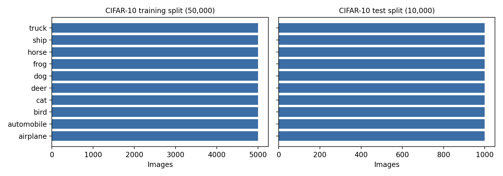
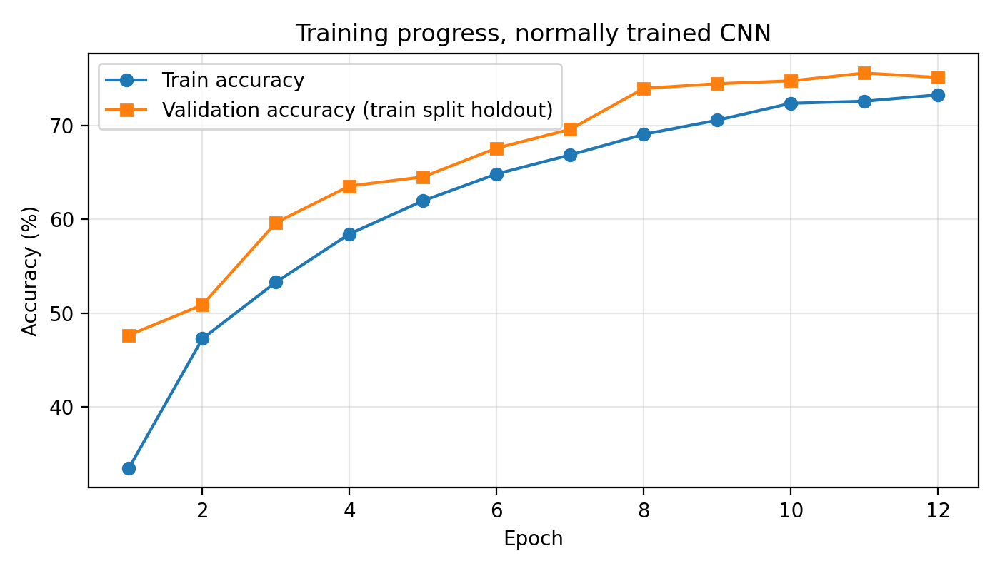
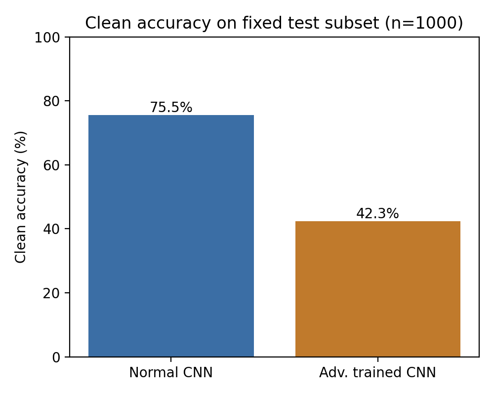
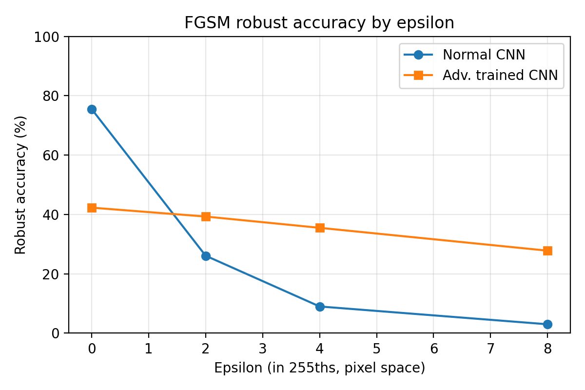
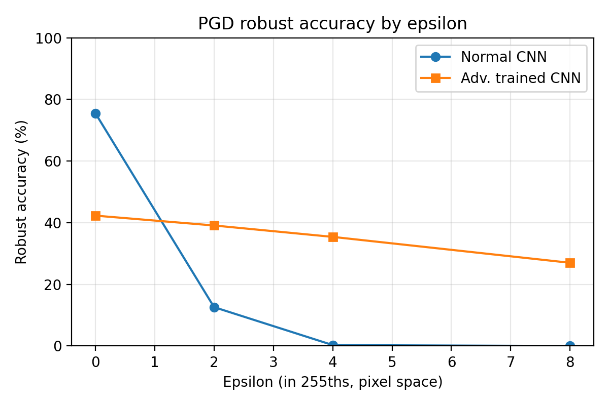
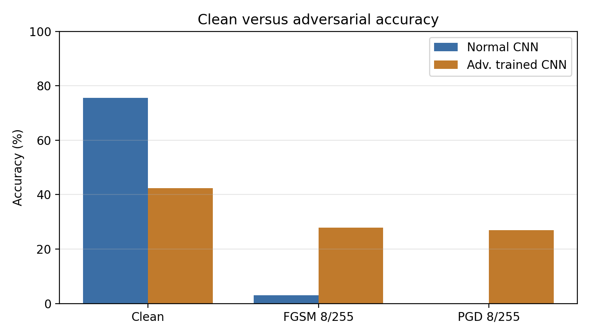
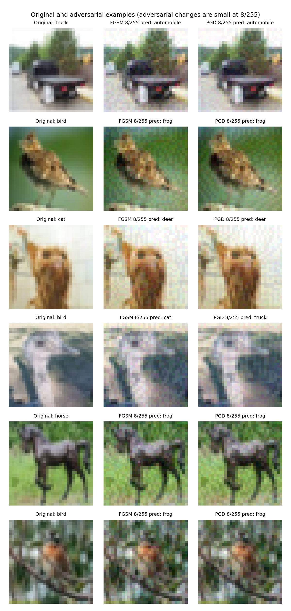
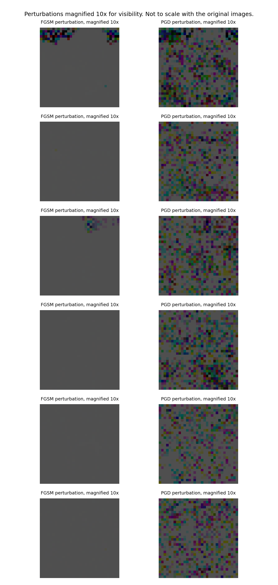
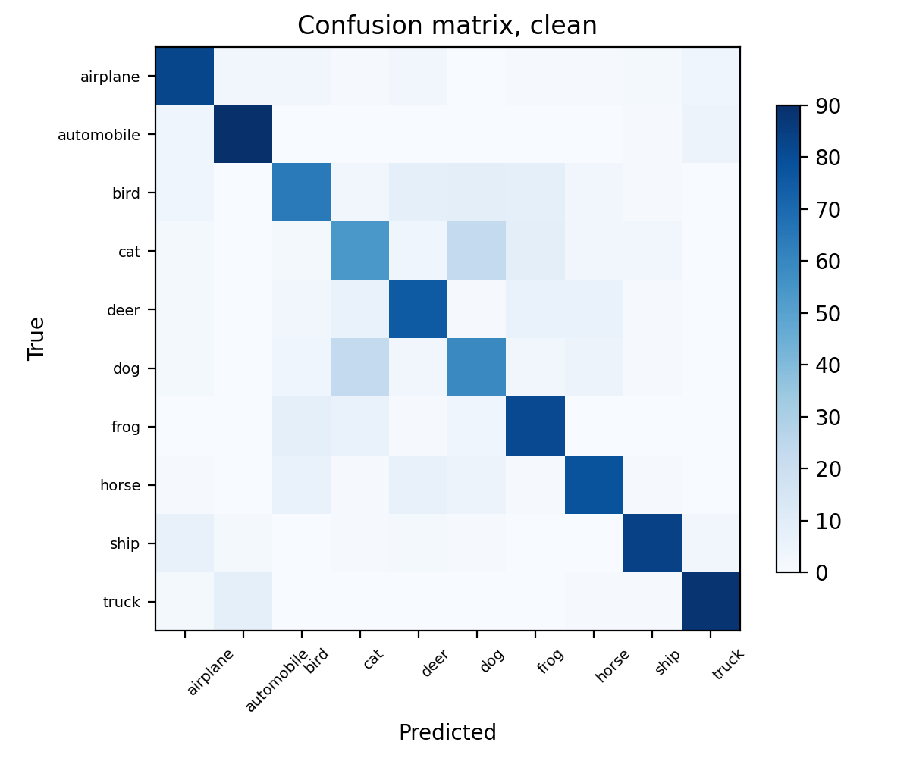
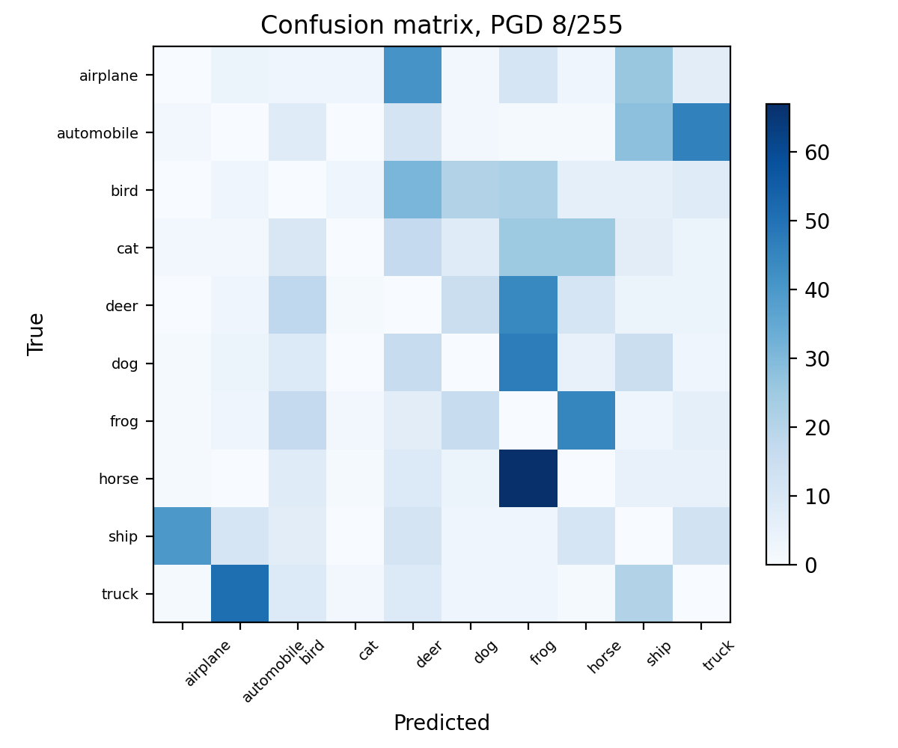

Independent project · Deep learning security
Adversarial Machine Learning and Model Robustness
A compact convolutional neural network was trained from scratch on CIFAR-10, then attacked with white-box FGSM and PGD perturbations. The study measures how accuracy changes as the perturbation budget grows, and whether a small adversarial training run changes that picture.
Technologies: Python, PyTorch, Torchvision, NumPy, and Matplotlib. All results come from actual model predictions recorded in outputs/results.json, measured on one fixed subset of 1,000 test images. Robustness to these attacks is not proof of security against all attacks.
Project overview
An adversarial example is an input that has been changed in a small, deliberate way so that a model predicts the wrong class, while the image still looks almost the same to a person. The change is not random noise. It is calculated from the model's own gradients, so it pushes the input in the direction that increases the model's loss.
This project builds that failure mode from first principles and measures it. A normally trained CNN is evaluated on clean images and then on attacked versions of the same images, at four perturbation strengths. A second CNN, trained with adversarial examples mixed into training, is evaluated under identical settings. Comparing the two on the same 1,000 images shows both the benefit and the cost of the defense.
Research objective
The research question is: can small, gradient based, pixel space perturbations change the predictions of a compact convolutional image classifier, and how does the effect grow with perturbation strength?
Two comparisons follow from that question. First, clean accuracy against robust accuracy for the same model on the same images, which separates ordinary classification performance from performance under attack. Second, the normally trained model against the adversarially trained model, which shows how much robustness the defense bought and how much clean accuracy it cost. The threat model is untargeted white-box attack under an L-infinity budget: the attacker knows the architecture and weights, computes exact input gradients, and may change every pixel by at most epsilon.
CIFAR-10 dataset
CIFAR-10 was loaded with torchvision from the official source at the University of Toronto (CIFAR-10). The official training split has 50,000 images and the official test split has 10,000 images. Each image is 32 by 32 pixels with 3 colour channels. The ten classes are airplane, automobile, bird, cat, deer, dog, frog, horse, ship, and truck. Both splits are balanced: 5,000 images per class in training and 1,000 per class in testing. Raw CIFAR-10 files are not included in the source download.
Model development used only the official training split. Training used a stratified subset of 15,000 training images, with a disjoint stratified validation set of 3,000 images, also from the training split, for checkpoint selection. Test labels were not used for fitting, tuning, or model selection. Final evaluation used one fixed stratified subset of 1,000 test images, 100 per class, and the same subset was used for every clean and adversarial comparison.
CNN architecture and training
The classifier is a compact CNN written for this project: three convolutional blocks with 32, 64, and 128 channels, with batch normalization and max pooling, followed by a 128 unit fully connected layer with dropout. It has 403,306 trainable parameters.
- Training from scratch on 15,000 training images for 12 epochs, with a batch size of 128.
- Optimizer AdamW with learning rate 0.001 and weight decay 0.0005, and a cosine learning rate schedule.
- Random crop and horizontal flip augmentation. Seed 42. Training ran on CPU.
- Checkpoint selection used the 3,000 image validation holdout from the training split. Best validation accuracy was 75.57 percent.
- Clean accuracy on the fixed test subset was 75.50 percent (755 of 1,000 images).
The model was trained on a subset of the available data for a small number of epochs on a personal computer, so its clean accuracy is below what a longer run on the full training split would reach. Every robustness figure that follows is conditional on this model.
Adversarial attack methodology
Both attacks work in pixel space, where image values run from 0 to 1. Epsilon is stated in 255ths, so 8/255 allows each pixel to change by at most about 0.031. Model normalization is applied inside the attack after gradients are taken with respect to the pixel space image, so the budget always means the same thing.
- FGSM (Fast Gradient Sign Method) takes one step. It computes the gradient of the loss with respect to the input pixels, then moves every pixel by the full epsilon in the sign direction of that gradient. It is fast and simple, but it only looks at the gradient at the original image.
- PGD (Projected Gradient Descent) repeats that idea. It starts from a uniform random point inside the allowed ball, then takes 20 steps of size epsilon divided by 4, projecting back into the L-infinity ball and clamping to the valid image range after every step. In this run it used 1 restart, and the strongest result found is kept. Because it searches the allowed region instead of stepping once, PGD usually finds stronger attacks than FGSM at the same epsilon.
- Epsilon values tested: 0/255, 2/255, 4/255, and 8/255. At 0/255 no perturbation is allowed, so robust accuracy equals clean accuracy by construction. That row is a sanity check.
- Two metrics are reported per attack. Robust accuracy is the share of all 1,000 test images still classified correctly after attack. Attack success rate is narrower: among images the model classified correctly before the attack, it is the share whose prediction changed.
Clean accuracy and robust accuracy answer different questions. Clean accuracy measures performance on ordinary inputs. Robust accuracy measures performance when an attacker is deliberately choosing the input to cause an error, within a stated budget. A model can be accurate in normal use and still fail under attack, which is exactly what happened here.
FGSM attack experiments
| Epsilon | Standard CNN robust accuracy | Standard CNN attack success | Adversarially trained robust accuracy | Adversarially trained attack success |
|---|---|---|---|---|
| 0/255 | 75.50% | 0.00% | 42.30% | 0.00% |
| 2/255 | 26.10% | 65.43% | 39.30% | 7.33% |
| 4/255 | 9.00% | 88.08% | 35.50% | 16.31% |
| 8/255 | 3.00% | 96.03% | 27.80% | 34.28% |
Even the weakest non-zero FGSM budget removes most of the standard CNN's accuracy: at 2/255 it falls from 75.50 percent to 26.10 percent, and at 8/255 only 30 of 1,000 images are still classified correctly. The attack succeeded on 96.03 percent of the images the model originally got right.
PGD attack experiments
| Epsilon | Standard CNN robust accuracy | Standard CNN attack success | Adversarially trained robust accuracy | Adversarially trained attack success |
|---|---|---|---|---|
| 0/255 | 75.50% | 0.00% | 42.30% | 0.00% |
| 2/255 | 12.60% | 83.31% | 39.10% | 7.80% |
| 4/255 | 0.30% | 99.60% | 35.40% | 16.31% |
| 8/255 | 0.00% | 100.00% | 27.00% | 36.17% |
PGD is the stronger attack at every non-zero epsilon, which matches how it is built: 20 gradient steps with projection find better attacks than one FGSM step. At 8/255 the standard CNN classifies none of the 1,000 attacked images correctly, and the attack succeeded on every image the model originally got right. At 4/255 only 3 images survive.
These PGD numbers are an upper bound on true robust accuracy, not a certificate. They come from a finite attack with 20 steps and 1 restart. A stronger attacker using more steps and restarts could push robust accuracy lower, and nothing here rules that out.
Adversarial training and defense
A second CNN with the same architecture was trained with FGSM adversarial examples at 8/255 generated on every training batch, so the model learned from attacked versions of its training images as well as clean ones. It was evaluated on the identical fixed test subset with identical attack settings.
The defense worked in the direction expected, within this small experiment. Under PGD at 8/255, accuracy rose from 0.00 percent to 27.00 percent, and under FGSM at 8/255 from 3.00 percent to 27.80 percent. Attack success rates fell sharply at every epsilon: for PGD at 2/255, from 83.31 percent to 7.80 percent.
The cost is visible in the clean column. Clean accuracy fell from 75.50 percent to 42.30 percent, a drop of 33.2 percentage points. That is the trade-off between clean accuracy and robustness in this experiment: the adversarially trained model gives up a large amount of ordinary performance to keep some performance under attack. It crosses over quickly, though. At every non-zero epsilon tested, the adversarially trained model is more accurate than the standard model, so the trade only favours the standard model when no attack is present.
Two cautions apply. First, this comparison is not a controlled ablation. The adversarially trained model also used fewer training samples (8,000 against 15,000) and fewer epochs (5 against 12), and its best validation accuracy was 39.20 percent, so part of the clean accuracy gap may reflect the smaller training run rather than the defense itself. The comparison is indicative, not a clean measurement of the defense alone. Second, adversarial training here used FGSM examples only, at one epsilon. It improves robustness to the attacks tested. It does not make the model secure against all attacks, and an attacker who knows the defense is present could adapt to it.
Performance comparison
| Model | Clean accuracy | FGSM at 8/255 | PGD at 8/255 |
|---|---|---|---|
| Standard CNN | 75.50% | 3.00% | 0.00% |
| Adversarially trained CNN | 42.30% | 27.80% | 27.00% |
Read as counts on the same 1,000 images, the standard CNN goes from 755 correct on clean images to 30 under FGSM and 0 under PGD at 8/255. The adversarially trained CNN goes from 423 correct on clean images to 278 under FGSM and 270 under PGD. Neither model is both accurate and robust. The experiment presents a choice between the two, at this scale of training.
Visualizations
These ten figures were generated from outputs/results.json and the saved attacked examples. Perturbation figures are magnified, and they say so in their titles. The raw changes at 8/255 are close to invisible at normal scale.










Research findings
- Small gradient based perturbations reliably change this model's predictions. Robust accuracy falls at every non-zero epsilon, for both attacks, on the same images that give 75.50 percent clean accuracy.
- PGD was the stronger attack in this experiment. At every non-zero epsilon, its robust accuracy is lower and its attack success rate is higher than FGSM at the same epsilon, consistent with PGD searching the allowed region over 20 steps instead of taking one step.
- The effect grows with the budget. For the standard CNN under PGD, robust accuracy goes from 75.50 percent at 0/255 to 12.60 percent at 2/255, 0.30 percent at 4/255, and 0.00 percent at 8/255.
- Attacks do not need a target class to be effective. These are untargeted attacks. They only need to move the prediction away from the correct label, and the confusion matrix under PGD shows predictions piling into a few classes.
- FGSM adversarial training improved robustness to both attacks tested, at a large clean accuracy cost. Under PGD at 8/255, robust accuracy rose from 0.00 percent to 27.00 percent, while clean accuracy fell from 75.50 percent to 42.30 percent.
- The defense comparison is confounded. The adversarially trained model used fewer training samples and fewer epochs, so the size of the trade-off measured here should not be read as the trade-off a matched training run would give.
Limitations
- The classifier was trained on a 15,000 image subset for 12 epochs on CPU, so its clean accuracy is below what a longer run on the full 50,000 image training split would reach. Robustness numbers are conditional on this model and this training run.
- Evaluation used a fixed subset of 1,000 test images, 100 per class, not the full 10,000 image test split. Percentages therefore rest on small counts, and 0.00 percent means 0 of these 1,000 images.
- PGD used 20 steps and 1 restart. A stronger attacker could reduce robust accuracy further, so these figures are an upper bound on robustness under this budget, not a certificate.
- Only untargeted white-box FGSM and PGD under an L-infinity budget were tested. Nothing here covers black-box transfer attacks, query based attacks, physical world perturbations, poisoning, model extraction, other distance norms, larger budgets, or adaptive attackers who know a defense is present.
- Adversarial training used FGSM examples only, at a single epsilon, in a smaller training run. It is a small experiment, not a production defense, and no certified defense is claimed.
- CIFAR-10 images are small and low resolution, and this says nothing about whether a perturbation that fools the model would fool a human.
The honest summary is narrow. This compact CNN, trained briefly on a subset of CIFAR-10, is accurate enough on clean images to be useful as a teaching example and fragile under white-box attack at budgets that leave images looking unchanged. Adversarial training recovered part of that fragility at a substantial clean accuracy cost in this run. Neither result makes the model secure, and neither should be read as a claim about other models, datasets, or attacks.
Source code download
The downloadable archive contains the Python implementation (model, data loading, FGSM and PGD attacks, training, evaluation, metrics, and figure generation), the experiment configuration, automated tests, the README with reproduction instructions, the case study text, measured results, all ten figures, saved example arrays, and the two trained checkpoints. It does not contain raw CIFAR-10 data, caches, credentials, or a virtual environment. CIFAR-10 is downloaded through torchvision when the experiment is reproduced.
Independence and licence note: the reference repository poojakira/adversarial-ml-lab was inspected before this project was built. Its licence is proprietary, all rights reserved and source visible. It is not an MIT licence. No code, experiments, reported figures, text, or figures were copied from it. This project is an original implementation based on the published definitions of FGSM (Goodfellow et al., 2015) and PGD (Madry et al., 2018). CIFAR-10 is provided by the University of Toronto for research use, under the terms on its dataset page.